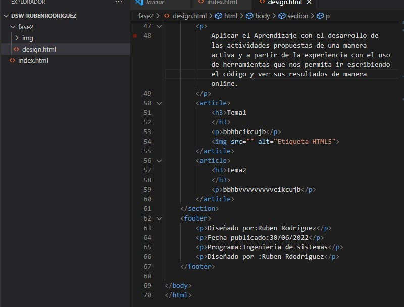

Aplicar el Aprendizaje con el desarrollo de las actividades propuestas de una manera activa y a partir de la experiencia con el uso de herramientas que nos permita ir escribiendo el código y ver sus resultados de manera online.
Tema1
Editores: un documento HTML no es mas que un archivo de texto, y nos sirve para editar un editor de texto simple // Codigo HTML: se debe buscar en la web la ultmima version de html5 y esta norma nos dice formalmente su sintasis y las etiquetas

Tema2
Segun la unidad del curso concluimos que la interaccion con el ser humano se podria entender como al escribir un codigo en html y al realizar la serie de pasos que corresponde podemos crear una idea e ir adaptando elemnto que adicional a exresar esa idea el usurio le permita interactuar con el sitio que creamos